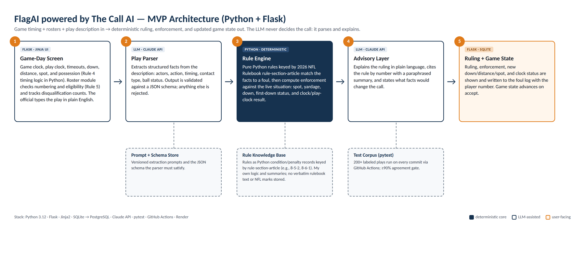
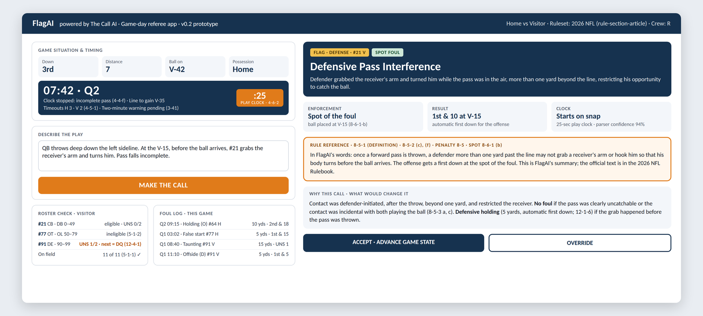
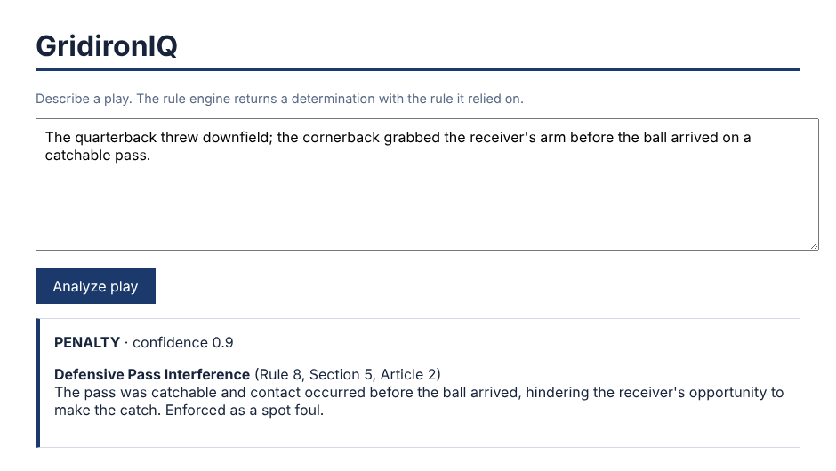
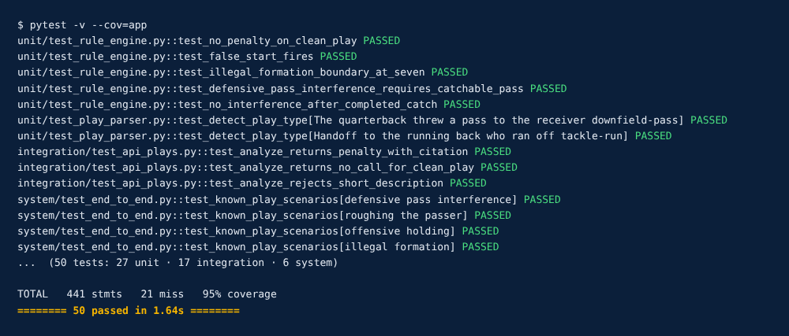
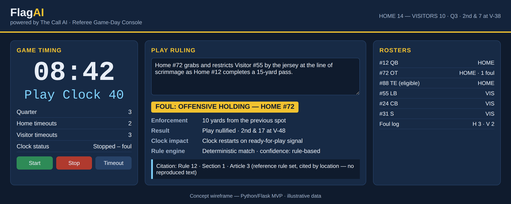

Student Innovation Project · SIP311 → SIP408 → SIP411
FlagAI powered by The Call AI
A game-day referee app that puts rules, rosters, and game timing in one screen. The official types the play in plain English; FlagAI returns the foul, the enforced result against the live game state, and the rule-section-article citation — decided by code, explained by AI.
Innovation claim
FlagAI unites a deterministic, citation-producing football penalty rule engine with roster and game-clock management in a single referee-facing application, so every ruling is repeatable, traceable to a specific rule, section, and article, and immediately reflected in the game state. Unlike general-purpose AI chatbots or static digital rulebooks, FlagAI returns the same verifiable answer for the same play every time.
Game-aware, not lookup
A chatbot can answer a rules question. FlagAI applies the rule to the live clock, down, distance, spot, and roster and hands back the enforced result: 1st & 10 at the V-15, clock starts on the snap.
Deterministic and testable
The call is made by Python rule code with tests behind every rule. Same facts, same ruling. The language model only parses the play and explains the call; it never makes it.
One tool for the whole game
Timing, rosters, and rulings share one game-state object, so one browser tab replaces the stopwatch, the roster card, and the rulebook search.
Round 2 pitch video
The Round 2 re-pitch walks through what changed after SME review, the four game-day features, the innovation claim, the Python + Flask technical approach, the MVP architecture, and the game-day screen prototype — in under five minutes.
How the project evolved
FlagAI started as a rules-lookup assistant. SME review pushed it toward a full referee tool, and every condition from that review is now built into the design.
- Spring–Summer 2026 · Origins FlagAI concept, Mini-TED talk and essays on AI in NFL officiating; CSC318 Software Requirements Specification and the working GridironIQ rule engine (50 tests passing).
- SIP311 Week 1–2 · Problem & pitch Problem statement, three candidate solutions, prior-art research. Peers recommended the text-play → ruling solution.
- SIP311 Round 1 · Passed with conditions SME asked for a referee app (not just rules), IP caution on the rulebook, Python + Flask for the MVP, and a ≤5-minute re-pitch.
- Sept 29, 2026 · Rule set approved Instructor approved using the NFL rules for the SIP and coursework.
- SIP311 Week 4 · SIP Innovation Brief Technical field, background, nine prior-art sources, project description, innovation claim, usage scenario. Read it →
- Oct 2026 · Round 2 re-pitch Game-day referee app: rules + rosters + timing, Python/Flask, new architecture and prototype screen. Video · Deck (PDF) →
SME conditions → how FlagAI answers them
| Round 1 condition | Round 2 response |
|---|---|
| Rules alone can already be looked up with AI tools — make it a referee app | Added a game-timing module (game clock, 40/25-sec play clock, timeouts, two-minute warning) and a roster module (numbering, eligibility, disqualification counts, foul log). The rule engine now runs inside the live game state. |
| Rulebook IP risk | Rules are encoded as original Python logic keyed by rule-section-article, with summaries in my own words. No rulebook text or league marks are stored or shown. Rule set approved by the instructor on 9/29/2026; the engine is ruleset-agnostic, so a high school ruleset can be added later. |
| Build the MVP in Python with Flask | Python 3.12 end to end; Flask + Jinja2 serve the game-day screen. One process, no separate JavaScript front end. |
| Re-pitch ≤ 5 minutes: features, innovation, languages | Seven-slide Round 2 pitch scripted to about 4:20. |
Project description
FlagAI is a web-based game-day assistant for football officials, built in Python with Flask. It is what an official opens on a phone or tablet at the game: it keeps the clock, knows who is on the field, rules on the play, computes the enforcement, and keeps the record.
Module 1
Make the Call
Plain-English play description in. The rule engine identifies the foul and computes enforcement against the live situation — spot, yardage, new down and distance, clock — with the rule number, a plain-language summary, and what facts would change the call.
Module 2
Game timing
Game clock with stop/start reasons, 40- and 25-second play clock, three timeouts per half, two-minute warning, and period changes. Every ruling reports what the clock does next.
Module 3
Rosters
Both teams' numbers and positions. Checks eligibility by numeral, counts players on the field, and warns when a second unsportsmanlike foul would disqualify a player.
Module 4
Foul log & report
Every accepted ruling is logged by time, team, and player number, with accept/override by the official and a post-game report for the crew.
Who it's for
- On-field officials and crews — fast, citable support during the game, with the official keeping final authority.
- Officiating trainees and clinic instructors — trainees rule on written plays and are graded against the same deterministic standard.
- League and association rules coordinators — test how a rule change alters enforcement outcomes.
Scope boundaries
The SIP311 build target is the rule engine with ten fouls, the timing module, and the Flask game-day screen. Video and computer-vision foul detection stay out of scope; the product is software-only and runs on a standard laptop or tablet. Design, rule encoding, engineering, and testing are mine — this is a solo project.
Architecture

Figure 1 — Round 2 MVP architecture (Python + Flask). Timing and roster modules feed one game-state object. The language model parses the play and explains the result; the ruling and enforcement come from the deterministic rule engine (dark box), the only place a call is decided.
Languages & frameworks
- Python 3.12 — rule engine, timing and roster modules as pure functions over a typed game-state object
- Flask + Jinja2 — routes, forms, and server-rendered game-day screen; a little JavaScript for the running clocks
- SQL — SQLite for the MVP (PostgreSQL for deployment) through SQLAlchemy models for games, rosters, rulings, and the foul log
- Claude API — parses the play into JSON-schema-validated facts and writes the plain-language explanation
- pytest + GitHub Actions — labeled play corpus and timing scenarios run on every commit; Docker image for deployment
Design principles
- Determinism first. Same facts, same ruling, every time.
- Citation or nothing. Every ruling carries rule, section, and article.
- The LLM is a narrator, not a referee. If it is unavailable, the engine still returns a complete, citable ruling.
- Official keeps authority. Every ruling is accept-or-override.
- IP-safe by design. Own logic and own summaries; no rulebook text, no league marks.
Prototype & working code
Early-stage prototype: the game-day screen

Figure 2 — Flask prototype mockup (Round 2). Left: game situation and timing, play description, roster check (#91 one foul from disqualification), and foul log. Right: Defensive Pass Interference on #21, spot foul, 1st & 10 at the V-15, clock starts on the snap, with the rule reference, what would change the call, and accept/override.
Working code today: the GridironIQ rule engine
The rule engine at the core of FlagAI already runs. I built it as my CSC318 final project (GridironIQ) with a layered architecture: parser → deterministic rule engine → advisory layer → audit log. It covers eight rules across pre-snap, passing, contact, and blocking fouls, and it ships with 50 automated tests at 95% coverage. For SIP311 I'm porting this engine into the Flask app and building the timing and roster modules around it.


Build status
| Milestone | Status |
|---|---|
| Problem statement, solutions, and prior-art research | Done |
| Round 1 pitch → passed with conditions; Round 2 re-pitch addressing every condition | Done |
| Rule set decision approved by instructor (NFL rules, own encoded logic) | Done |
| SIP Innovation Brief, Part 1 | Done |
| Software Requirements Specification (CSC318) | Done |
| Rule engine core: 8 rules, parser, citation output, 50 tests (GridironIQ) | Done |
| Port engine to Flask; expand to 10 fouls with enforcement against game state | In progress |
| Game-timing module (game clock, play clock, timeouts, two-minute warning) | In progress |
| Roster module, eligibility checks, foul log | Planned |
| SIP Brief Part 2: evaluation criteria, goals and tasks, prototype description | Planned |
| Labeled play corpus in CI; user testing with officials | SIP408 |
Code & documents
Source code — rule engine
GridironIQ engine: play parser, rule library, deterministic engine, advisory seam, SQLite audit log, and 50 tests. Python · GitHub
Rule library
How a rule becomes code: each foul is a predicate over parsed facts, with yardage, enforcement, and a rule-section-article citation.
Round 2 pitch video
The re-pitch: changes after SME review, features, innovation claim, Python + Flask, architecture, and prototype. YouTube
Round 2 pitch deck
Seven slides: what changed, features, innovation claim, Python + Flask approach, MVP architecture, game-day prototype. PDF
SIP Innovation Brief
Part 1: technical field, background, nine prior-art sources, project description, innovation claim, usage scenario.
Software Requirements Specification
CSC318, 16 pages: 11 functional and 6 non-functional requirements, use case model, UML domain and agent diagrams, traceability matrix. PDF
Round 1 pitch deck
The original "FlagAI powered by The Call AI" pitch, kept as a record of where the project started. PDF
Visuals, blueprints & concept art



The Call AI ecosystem (long-term vision)
FlagAI is the football division of a multi-sport officiating platform, each division named for its sport's core officiating mechanism:
Prior art — and where FlagAI differs
| Existing work | What it does | FlagAI's difference |
|---|---|---|
| 2026 NFL Rulebook | Authoritative static reference by rule, section, article | Encodes rule logic as code that returns the foul, enforcement, and citation |
| NFHS Digital | Searchable high school rules and case books | Produces a ruling and ties it to clock and rosters instead of a search result |
| REFSIX | Soccer referee timers, cards, rosters, match reports | Brings timing and rosters to football and links them to a rule engine |
| Arbiter | Assigning, availability, and payment for officials | Works during the game, not before and after it |
| Hawk-Eye line-to-gain | Camera system for one measurement in NFL stadiums | Software-only, covers many fouls, runs on any laptop or tablet |
| FIFA semi-automated offside | Vision-based, single rule, elite venues | Text-based, multi-rule, available at any level |
| ChatGPT and general LLMs | Answer rules questions in prose; may vary or misquote | Deterministic, verifiable ruling every time; no clock or roster in chatbots |
| Martín Moncunill et al. (2026), MTI | Finds research focused on accuracy systems; practical gaps remain | Accessible decision support for officials rather than camera accuracy tools |
| Dowsett (2024), Scientific American | Experts see AI as an aid to officials, not a replacement | Official keeps authority; FlagAI supplies a fast, citable recommendation |
Full citations and differentiation in the SIP Innovation Brief.
SIP Innovation Brief
Part 1 of the brief is complete: technical field, background and inspiration, nine prior-art sources with APA citations, project description, innovation claim, and a training-clinic usage scenario. Parts 2 and 3 (evaluation criteria, goals and tasks, prototype description, evaluation plan) follow in SIP408 and SIP409.
Roadmap to SIP411 Boards
- SIP311 · now Round 2 re-pitch, website, Innovation Brief Part 1 — done. Port engine to Flask; timing module.
- SIP311 · end of term Rule engine with ten fouls, timing module, and the Flask game-day screen running end to end.
- SIP408 Roster module and foul log, labeled play corpus in CI, Brief Part 2, user testing with officials and trainees.
- SIP409 Evaluation plan and completion assessment; deployment.
- SIP411 · Boards Live demo, objectives evidence, and defense.